Evaluating Completeness, Optimality, and Efficiency Across UCS, A* Search, and Steepest-Descent Hill Climbing on 2D Video Game Pathfinding Benchmarks
Problem Statement and Motivation
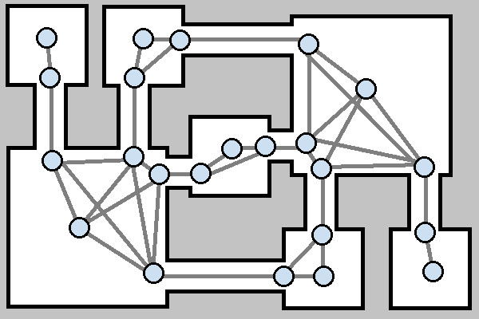
Pathfinding, defined as the problem of finding the shortest path from source to destination while avoiding obstacles (Barnouti et al. 2016). Pathfinding is a classical problem in artificial intelligence, robotics, and video-games. On a 2D map each tile acts as a node and a valid movement counts as an edge, where straight moves cost 1 and diagonal moves cost √2. Because of this, in order to find the optimal path we need to implement a weighted graph search rather than unweighted traversal. While there have been theoretical properties of search algorithms that are established in literature, this project aims to explain how differently these algorithms perform on real game maps of different sizes filled with obstacles. This project investigates the difference between three distinct search paradigms on 2D grid pathfinding:
- Uniform Cost Search (UCS) - uninformed global search relying on accumulated path costs g(n).
- A* Search - informed global search combining g(n) with a heuristic h(n). For this project, the heuristic to be used is octile distance heuristic
- Steepest-Descent Hill Climbing - a memory local search that greedily moves to whichever immediate neighbor minimizes the h(n) without maintaining open frontier or backtracking history.
To evaluate the trade offs between the search algorithms, each is benchmarked using standardized quantitative metrics: success rate, optimality rate (within a 0.001 float tolerance), average nodes expanded, average peak open node list, and the average runtime. To ground this evaluation in real-world applications, this project uses maps from the given 2D Pathfinding Benchmarks derived from video games such as Dragon Age: Origins, Warcraft III, Starcraft, etc. Game specified maps with designer-built environments come with actual bottlenecks reflecting spatial challenges handled by game engines and navigation systems. Relying on this dataset also ensures a cleaner set of results without data noise seen in earlier studies. The benchmark also comes with scenario files that have pre-verified start and end goals, establishing clearer points of comparison.
Dataset Description
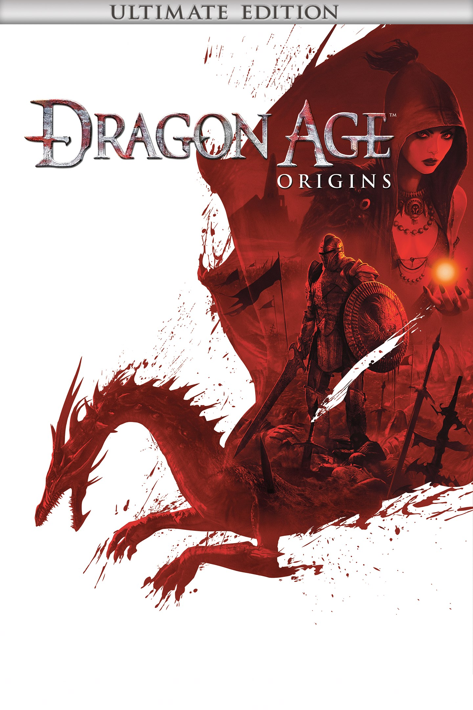
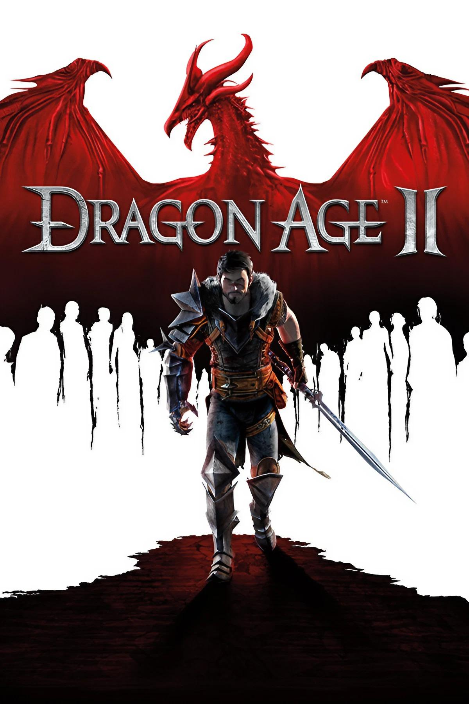
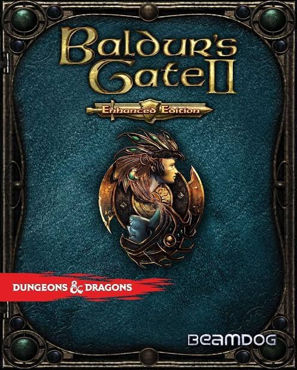
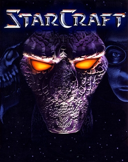
This project uses the Moving AI Lab 2D Grid-based Pathfinding Benchmarks, a public benchmark for evaluating heuristic and uninformed search algorithms. Although the repository also provides 3D worlds and synthetic grids, the project will be focusing exclusively on 2D commercial video game maps. Commercial game environments were selected because of realistic spatial structures that provide a practical testbed for the different search algorithms. Each benchmark consists of two paired plain-text files: a .map file describing the static environment and a .scen (scenario) file defining pathfinding queries.
- Map Files - Each map file begins with a 4-line metadata header specifying grid geometry (type octile, height y, width x, map) followed by a y*x ASCII character matrix representing the environment. The origin (0,0) is found at the upper-left corner, where x denotes column index and y denotes the row index. The benchmark specification defines seven terrain symbols: . and G for passable terrain, @ and O for out of bounds, T for trees (unpassable), S for swamp (passable from regular terrain), and W for water (traversable, but not passable from terrain)
- Scenario Files - Scenario files begin with a version header, followed by tab-delimited problem rows. Scenarios are partitioned into buckets and are ordered from easiest (bucket 0) to hardest. Each row contains 9 attributes: bucket number, map name, map width, map height, start x, start y, goal x, goal y, and optimal length.
Methods
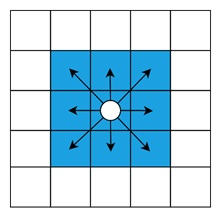
The three search algorithms are navigating the same 8-connected octile grid environment. This is implemented using the helper functions is_passable and get_neighbors. For any passable cell, an agent can move in 4 cardinal directions (North, East, South, and West) which have a cost of 1, and 4 diagonal directions (Northeast, Southeast, Northwest, Southwest) which have a cost of √2. However, it is also important to note that corner cutting is not allowed, meaning a diagonal move is invalid if the adjacent moves are invalid.
(a) Uniform Cost Search (UCS)
Uniform Cost Search (UCS) is an uninformed search algorithm exploring paths based on cheapest accumulated cost from the starting point g(n). UCS does not know which direction the goal is located. The Python implementation uses a binary min-heap (heapq) as open_list, a closed_list set for visited nodes, and a best_g tracker to record lowest cost found for each coordinate. By setting the heuristic to zero (h(n) = 0), the algorithm expands outward in all directions until it reaches the goal. UCS is guaranteed to find a valid, shortest path if one exists, but might check unnecessary nodes along the way considering it is an uninformed search.
(b) A* Search (with Octile Distance Heuristic)
A* Search is an informed search algorithm that picks which node to explore next using f(n) = g(n) + h(n), where g(n) is the cost from the starting point and h(n) is the estimated cost to the goal. The octile distance is used for h(n) since the maps allow diagonal moves that cost √2. The Python implementation uses the same search function as UCS, but with octile_distance as the heuristic instead of zero. This lets A* focus on nodes closer to the goal, so it expands fewer nodes than UCS while still finding the shortest path.
(c) Steepest-descent Hill Climbing
Steepest-descent Hill Climbing is a greedy local search algorithm that does not use memory. It iteratively evaluates all neighboring states and moves from its current state to the neighboring state with the greatest reduction in an objective or heuristic function (Poole & Mackworth, 2023). Normally implemented as Steepest-ascent Hill Climbing which aims to find the maximum, Steepest-descent Hill Climbing operates in reverse for pathfinding where the aim is to find the shortest distance possible.
Experimental Setup
The project is concerned with deterministic search methods, hence there is no need for train or test split data. Evaluation is structured as a benchmark across 529 maps from five games, each map contributing 10 scenarios (5290 total scenarios). Since the total scenario count of all maps and all games would lead to more than 600,000 scenarios, 10 scenarios are deterministically sampled from each .scen file. Since scenario files are pre-sorted from the easiest to hardest index, indices are chosen using the formula i * [(N-1) / (k-1)] rounded off. This would give an even division of scenarios, dividing the range into 9 equal intervals capturing both easiest and hardest scenarios alongside 8 evenly spaced intermediate difficulties. Before running the search algorithms, raw benchmark files are parsed and formatted. Map files are parsed by stripping leading whitespaces and new lines, and getting the height and width. Scenario files are parsed by reducing the values to the four attributes needed for evaluation (bucket, start and goal coordinates, and the pre-computed optimal path). Every scenario is executed across the three methods, for a total of 15870 runs. Performance is evaluated across five metrics:
| Performance Metric | Definition of Metric | What does this metric measure? |
|---|---|---|
| Success Rate (%) | Percentage of scenarios where a valid path was found. | Completeness |
| Optimality Rate (%) | Percentage of scenarios where the optimal path matches the pre-computed optimal path. | Optimality |
| Average Nodes Expanded | Mean number of states explored/expanded per scenario. | Search Efficiency |
| Average Peak Open-List Size | Mean maximum number of entries in open_list during search (always 1 for Hill Climbing, doesn't track) | Peak Memory Footprint |
| Average Runtime (s) | Mean wall-clock execution time per scenario | Execution Speed |
To ensure fairness in comparison, each algorithm and data parsing of raw benchmarks were done from scratch using Python's standard library under identical terrain and no-corner cutting rules. We verify optimality by checking if a found path's cost matches the stated optimal length in .scen files, with a 0.001 tolerance to account for the decimal rounding.
Results
The sampled 5290 scenarios were run on all three methods on an AMD Ryzen 7 6800H with Radeon Graphics CPU, averaging performance per game across the full dataset. There will be differences depending on CPU because wall-clock runtime depends on processor speed and system load, so the recorded times will have relative differences on different types of processors and machines. UCS and A* search achieved 100% on optimality and success rate, while Hill Climbing solved only 30% of scenarios overall, peaking at 42% on small maps and dropping to 15.5% on larger maps. In terms of search effort, A* cut overall node expansions by 65.1% and runtime by 61.8% (2.62x overall faster than UCS in terms of average runtime). The biggest gains in performance are present on larger maps like Warcraft III.
On average, A* held a larger active open_list than UCS because it pushes more towards the goal, while leaving branches queued. However, A* search still consumed less total memory across every game because of its smaller closed set. Hill Climbing finished in under 1 millisecond with O(1) memory because of early trapping. Failure rate climbed from 43% on small maps to 85.3% on bigger maps.
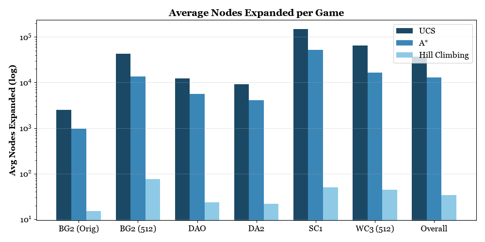
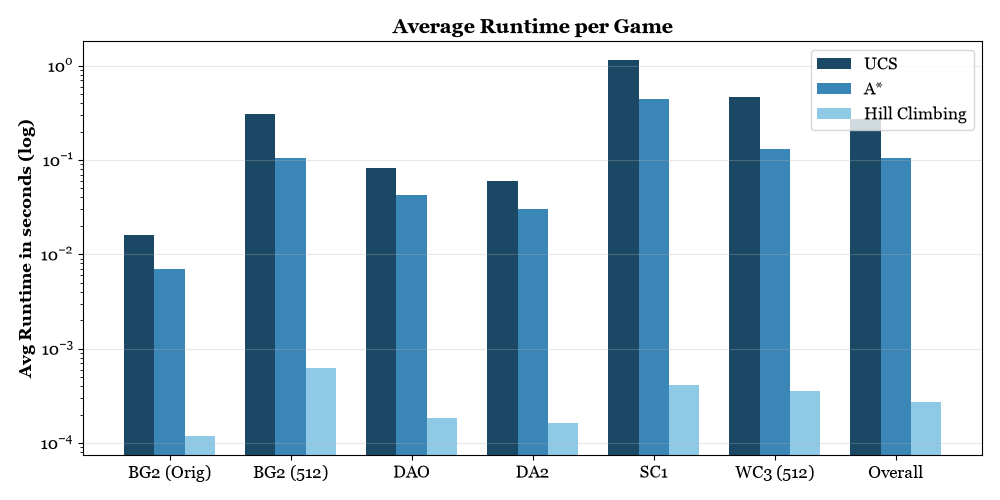
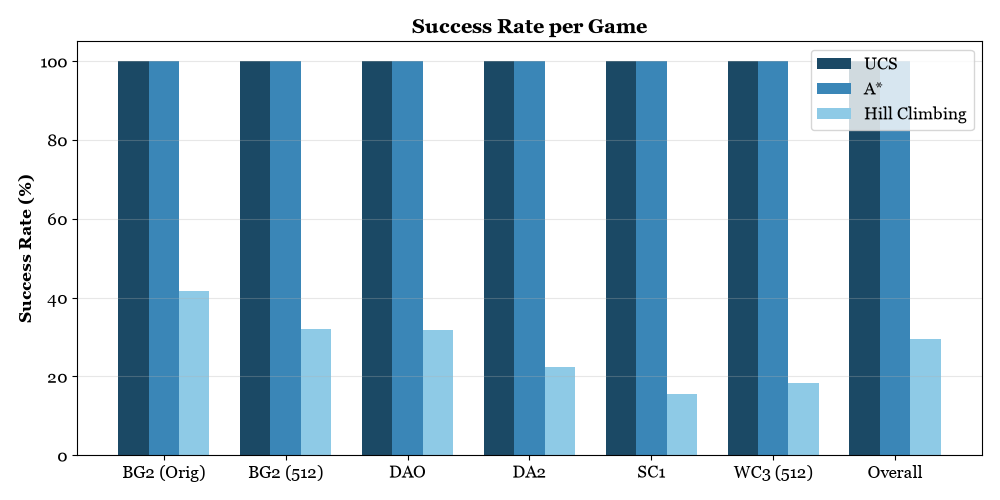
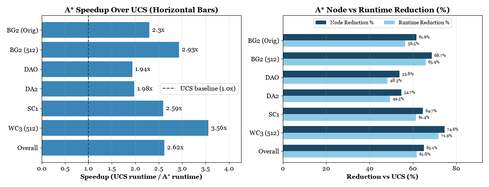
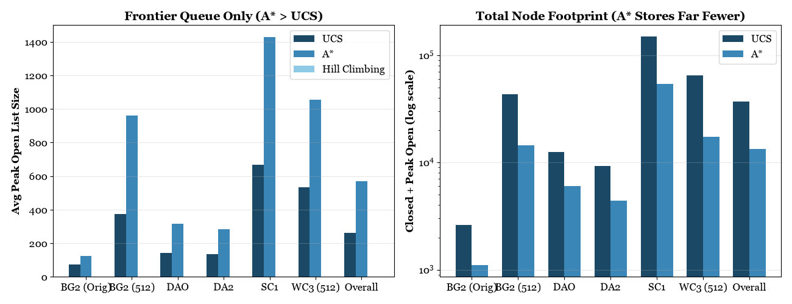
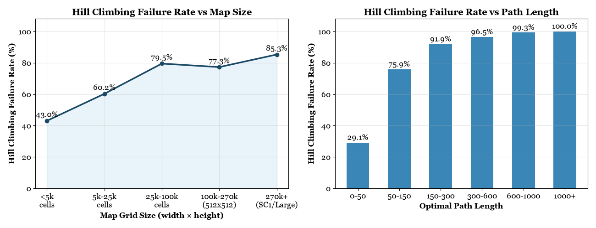
Discussion
The obtained results show how map layout and area affect search performance. Both UCS and A* searches obtain optimal paths (Figure 1.3), which proves that these searches are reliable. Additionally, it supports the idea that using octile distance as a heuristic is admissible for navigating 8-way grids. However, we can see in the figure that the speedup of A* search over UCS depends on game geometry (Figure 2.1 and 2.2). For open area games such as Warcraft III and Starcraft, A* goes straight toward the target because of its heuristic (3.56x speedup), but in tight and smaller maps such as Dragon Age: Origins and Dragon Age II, A* is forced to explore dead-end rooms. A* search cut node expansions by 65.1% and runtime by 61.8% compared to UCS. This extra timing gap comes from the extra per-step heuristic and queue work (Figure 2.2). Even though A* had a larger peak open list than UCS (Figure 3.1), the total stored nodes were lower compared to UCS (Figure 3.2).
Steepest-Descent Hill Climbing shows why discarding memory is inefficient and inadmissible especially in obstacle-heavy environments (Figure 1.3). Since Hill Climbing only looks at the immediate neighbors and there is no implementation of backtracking, it is often trapped in a local minimum. Longer paths on bigger maps often cross at least one caved obstacle, explaining why Hill Climbing failed 100% of the time on routes over 1000 units. Games having intricate dungeon maps such as Dragon Age trapped it even more often compared to larger maps (Figure 4.1).
It is important to note that the project has few practical limitations that affect the interpretation of the results. First, the measured runtime and results depended on the AMD CPU used to run the benchmark, as well as the additional overhead of running the Python interpreter rather than implementing the benchmarks on faster programming languages such as C or C++. The recorded runtime shows relative differences on different setups rather than fixed speeds for real-world game engines. Additionally, selecting only 10 scenarios per map covers a wide range of difficulty, but still leaves out rare edge cases present. The environment also treats all passable tiles with a uniform base cost of 1, without modelling variable terrain penalties (e.g. slower movement through swamp tiles) or moving obstacles. Finally, Steepest-Descent Hill Climbing was evaluated without memory restarts meaning its failure rate reflects pure local search rather than enhanced local search, which can be a point of improvement for further projects dealing with this dataset.
Conclusion
By benchmarking from-scratch implementations of UCS, A*, and Steepest-Descent Hill Climbing across 15870 runs on commercial video game maps, this project shows the theoretical difference of informed and uninformed search algorithms in actual performance numbers, with real-world practical datasets. A* Search with Octile Distance proved to be the most efficient and correct for 2D game navigation. A* and UCS both have 100% completeness and optimality (Figure 1.3), however, A* search cuts node expansions by 65.1% and runs 2.62x faster than UCS (Figure 1.1, 1.2, 2.1, 2.2) and requiring a smaller total memory footprint (Figure 3.2).
In real-world game development and robotics engineering application, these findings offer design takeaways. Uninformed search is slow on larger maps (explores more than 150000 nodes and takes >1s to run), while relying on an informed memoryless search like Hill Climbing fails often (70% overall, even 85.3% on larger maps and 100% on longer routes) to be used alone. Combining an admissible heuristic with an informed memory search like A* remains the essential foundation for reliable and efficient pathfinding in complex environments.
References
- Barnouti, N. H., Al-Dabbagh, S. S. M., & Sahib Naser, M. (2016). Pathfinding in Strategy Games and Maze Solving Using A* Search Algorithm. Journal of Computer and Communications, 4(11), 15–25.
- BioWare. (2000). Baldur's Gate II: Shadows of Amn [Video game]. Interplay Entertainment.
- BioWare. (2009). Dragon Age: Origins [Video game]. Electronic Arts.
- BioWare. (2011). Dragon Age II [Video game]. Electronic Arts.
- Blizzard Entertainment. (1998). StarCraft [Video game].
- Blizzard Entertainment. (2002). Warcraft III: Reign of Chaos [Video game].
- Patel, A. (2026, May 25). Heuristics. Amit's Thoughts on Pathfinding. https://theory.stanford.edu/~amitp/GameProgramming/Heuristics.html
- Sturtevant, N. (2012). Benchmarks for grid-based pathfinding. Transactions on Computational Intelligence and AI in Games, 4(2), 144–148. http://web.cs.du.edu/~sturtevant/papers/benchmarks.pdf
- Poole, D. L., & Mackworth, A. K. (2023). Artificial intelligence: Foundations of computational agents (3rd ed., Chapter 4: Reasoning with Constraints, Section 4.6). Cambridge University Press. https://artint.info/3e/html/ArtInt3e.Ch4.S6.html